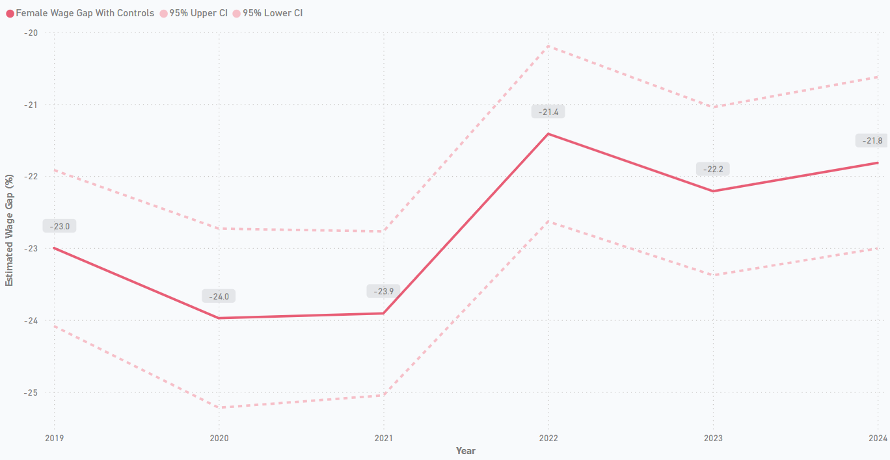
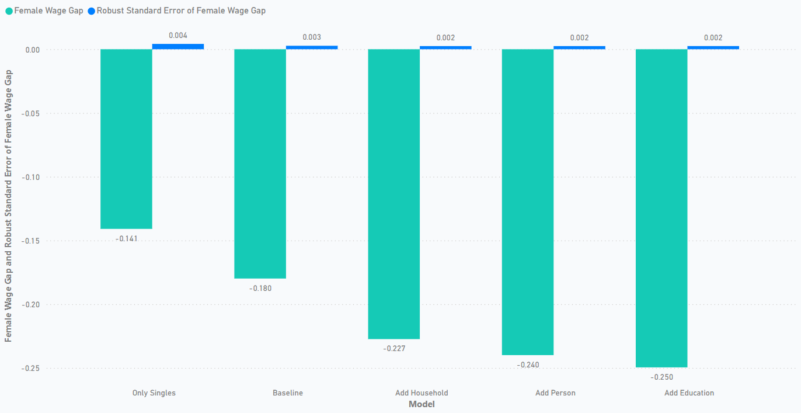
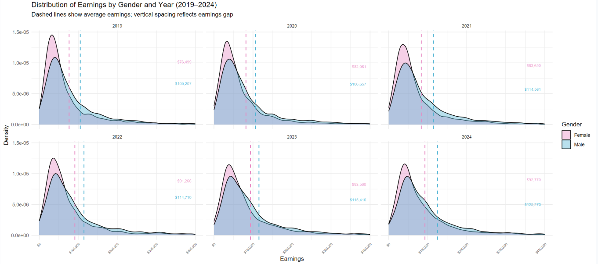

Gender Wage Gap (2019–2024)
Interactive Power BI report + selected R visuals
Key charts (R)

Adjusted wage gap by year (controls applied): ~22–24%.

Raw 18% → +education 25% → +demo/household 22.7% → singles 14.1%.

Earnings distributions by gender (2019–2024).